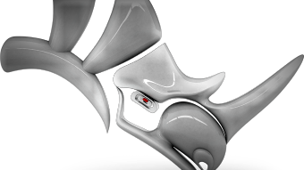

Rhino 7
Hardware Recomendado
AMD o Intel de 64 bits
Se recomienda 8 GB de memoria RAM o más.
600 MB de espacio en disco duro.
Se recomienda 4 GB o más de RAM de vídeo.
Hardware Recomendado
AMD o Intel de 64 bits
Se recomienda 8 GB de memoria RAM o más.
600 MB de espacio en disco duro.
Se recomienda 4 GB o más de RAM de vídeo.
Hardware Minimo Microsoft Windows 10 (solo 64 bits) Procesador de 2,5 Memoria RAM 8 GB Memoria en Disco 6 GB de espacio disponible en el disco duro (sin incluir los requisitos de instalación)
Hardware Recomendado Windows 10 8 GB de RAM (se recomiendan 16 GB). 3 GB de espacio disponible en el disco duro para la instalación,se necesita espacio libre adicional durante la instalación.
Hardware Recomendado Windows 10 8 GB de RAM (se recomiendan 16 GB). 3 GB de espacio disponible en el disco duro para la instalación,se necesita espacio libre adicional durante la instalación.